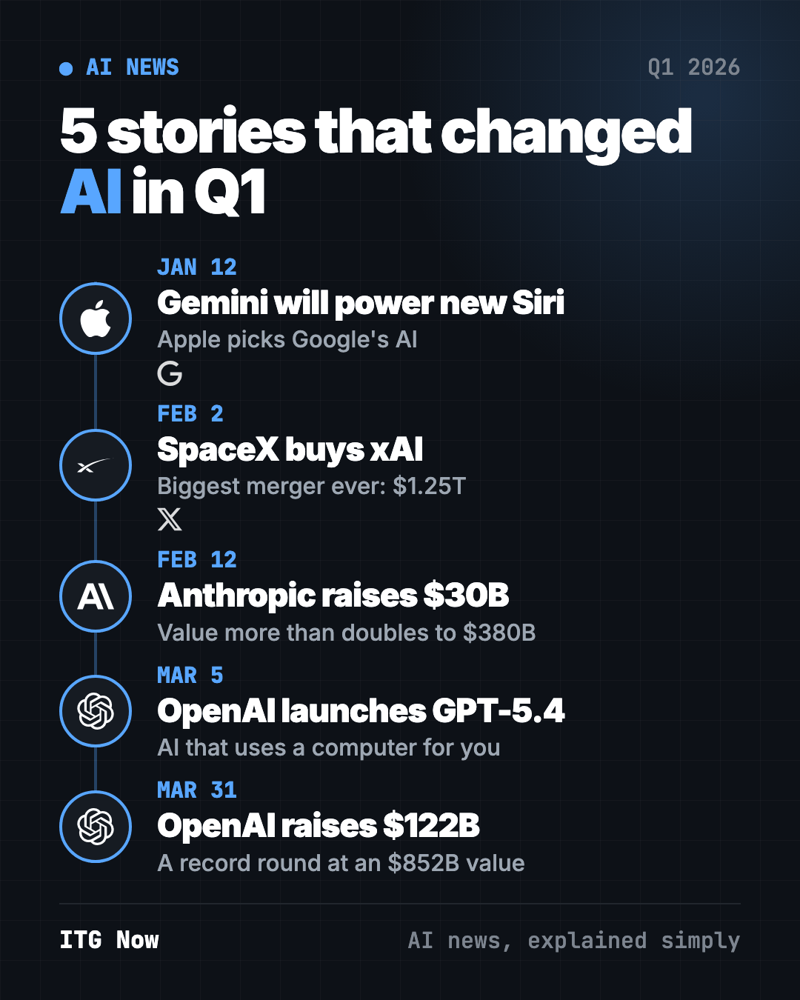
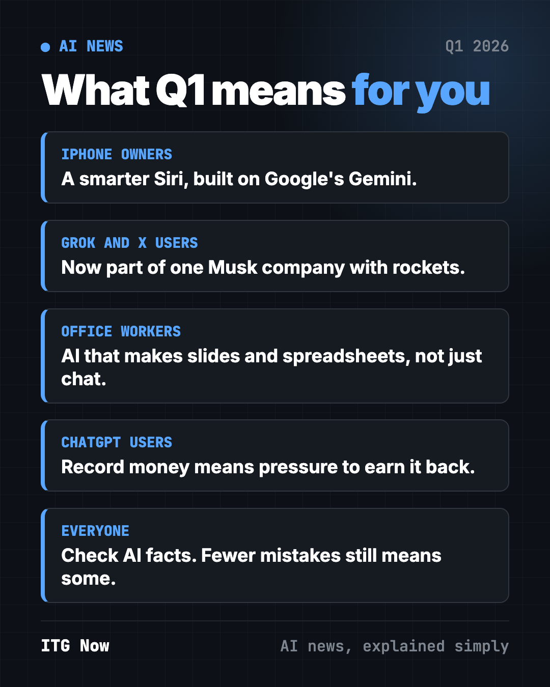
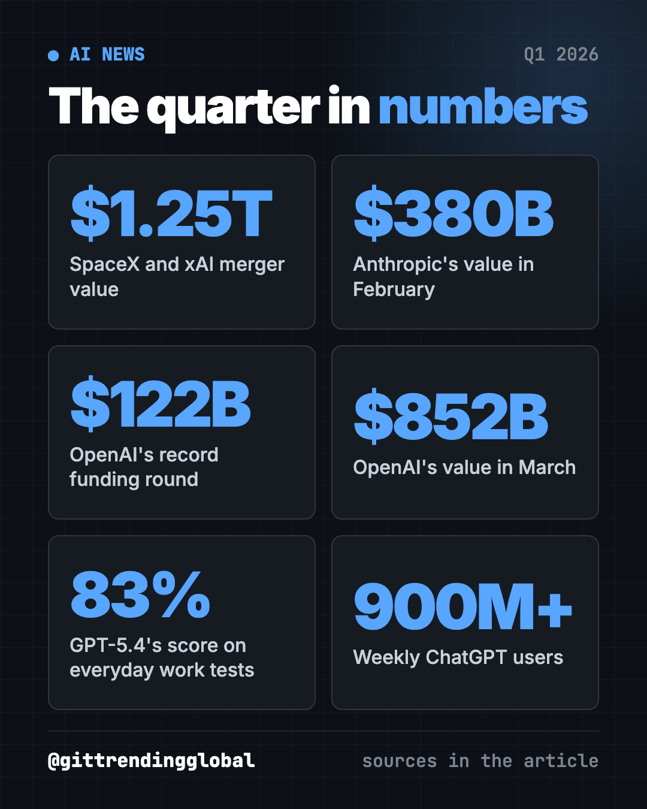

AI News Q1 2026: The 5 Stories That Changed Everything
- Published 15 Oct 2026
- Updated 16 Oct 2026
- 8 min read
- By the ITG Now team
In this guide (10)
- Key takeaways
- 1. Apple picks Google's Gemini to power the new Siri
- 2. SpaceX buys xAI in the biggest merger ever
- 3. Anthropic raises $30 billion at a $380 billion value
- 4. OpenAI releases GPT-5.4, built for work
- 5. OpenAI raises a record $122 billion
- AI news Q1 2026 at a glance
- How to use this quarter's news (copy and paste)
- Where to read more
- FAQ
The biggest AI news Q1 2026 brought was about money and muscle. From January to March, Apple chose Google's Gemini for the new Siri, SpaceX bought xAI, Anthropic and OpenAI raised record sums, and OpenAI's GPT-5.4 learned to use a computer like a person.

Key takeaways
- Apple, which likes to build everything itself, picked a rival's AI to power its next Siri.
- Elon Musk merged SpaceX and xAI in a deal valued at $1.25 trillion, the biggest merger ever.
- Anthropic more than doubled its value to $380 billion. OpenAI then raised $122 billion at an $852 billion value.
- GPT-5.4 showed the new goal: AI that does whole tasks on a computer, not just chat.
- The money set up the rest of 2026: bigger models, stock market plans and a fight for first place.
1. Apple picks Google's Gemini to power the new Siri
What happened
On January 12, Apple and Google announced a multi-year deal. Apple's next AI models, including the new Siri, will be built on Google's Gemini (CNBC).
- Apple said Google's tech gives "the most capable foundation" for its own AI.
- The models still run on Apple devices and Apple's private cloud.
- Apple did not share the price. It also kept its existing ChatGPT deal for Siri.
Why it matters to you
If you own an iPhone, this is the deal behind the smarter Siri Apple had delayed. It is also a big win for Google in its race with OpenAI.
What happened next
Apple released its Gemini-built "Siri AI" in beta on September 14, in English first (Apple). It is not in the EU or China yet.
💡 Tip: you don't have to wait for Apple. The free Gemini app on iPhone and Android uses the same family of AI models.
2. SpaceX buys xAI in the biggest merger ever
What happened
On February 2, Musk said SpaceX, his rocket company, was buying xAI, the maker of the Grok chatbot (CNBC).
- The deal valued SpaceX at $1 trillion and xAI at $250 billion.
- Musk said the main goal is "orbital data centers," meaning computer centers in space.
- It also gave xAI more cash to keep up with OpenAI and Anthropic.
Why it matters to you
AI now eats so much power and so many chips that companies want to put computers in orbit. If you use Grok or X, they now sit inside one Musk company with rockets and Starlink internet.
What happened next
SpaceX went public in June in the largest IPO ever. It raised $75 billion at $135 a share (CNBC). An IPO is when a company first sells shares on the stock market.
3. Anthropic raises $30 billion at a $380 billion value
What happened
On February 12, Anthropic, the maker of Claude, closed a $30 billion funding round. It valued the company at $380 billion, more than double its last value (CNBC).
- Anthropic said its yearly revenue pace hit $14 billion.
- Claude Code, its coding helper, alone reached a $2.5 billion yearly pace.
- About 80% of its business comes from companies, its CEO said.
Why it matters to you
Businesses, not just chat fans, are paying for AI at work. So expect the software at your job to add more AI features.
What happened next
In May, Anthropic raised $65 billion at a $965 billion value and passed OpenAI (CNBC). Our Q2 2026 AI news recap tells that story.

4. OpenAI releases GPT-5.4, built for work
What happened
On March 5, OpenAI released GPT-5.4, which it called its best model "for professional work" (TechCrunch).
- It comes in three versions: standard, Thinking (it reasons step by step) and Pro.
- It set records on tests where AI clicks and types on a computer.
- It matched or beat professionals in 83% of comparisons on GDPval, OpenAI's test of everyday work tasks.
- OpenAI said it is 33% less likely to get single facts wrong than GPT-5.2.
Why it matters to you
The race moved from chat to whole tasks, like slide decks and spreadsheets. Fewer made-up facts is good news. But "less likely" still means "sometimes," so check names, numbers and dates.
What happened next
Less than two months later, on April 23, OpenAI released GPT-5.5 (CNBC).
⚠️ Heads up: AI that uses your computer can click the wrong thing. Watch it work the first few times, and never hand it your passwords.
5. OpenAI raises a record $122 billion
What happened
On March 31, OpenAI closed a $122 billion funding round at an $852 billion value (CNBC).
- Amazon agreed to invest up to $50 billion. Nvidia and SoftBank put in $30 billion each.
- For the first time, regular investors could join through banks. They put in $3 billion.
- OpenAI said it makes $2 billion in revenue a month, but it still loses money.
- ChatGPT has more than 900 million weekly users, including over 50 million paying subscribers.
Why it matters to you
That much money raises the pressure to earn it back. That is one reason ChatGPT started showing ads to some free users in the U.S. in February.
What happened next
OpenAI confidentially filed to go public in June (CNBC). "Confidentially" means it can prepare without showing its books to the public yet.
AI news Q1 2026 at a glance
| Story | Company | Date | Why it matters |
|---|---|---|---|
| Gemini will power new Siri | Apple, Google | Jan 12 | Apple picked a rival's AI for the iPhone |
| SpaceX buys xAI | SpaceX, xAI | Feb 2 | Biggest merger ever, at $1.25 trillion |
| $30B round at $380B | Anthropic | Feb 12 | Claude's maker more than doubled its value |
| GPT-5.4 launches | OpenAI | Mar 5 | AI that does whole tasks on a computer |
| $122B round at $852B | OpenAI | Mar 31 | A record funding round |

How to use this quarter's news (copy and paste)
Paste any of these into ChatGPT, Claude or Gemini. Fill in the parts in [brackets].
To try the kind of work GPT-5.4 was built for:
Turn these notes into a one-page summary with a title, 3 key points and a short to-do list: [paste your messy notes]
To see how AI could help in your job:
My job is [your job title]. List 5 tasks in my week that an AI assistant could help with, and show me one prompt for each. Plain words.
To make sense of the big money:
Explain in 5 short sentences what it means when a company like OpenAI is "valued at $852 billion." Is that cash in the bank? Use plain words.
To pick the right assistant:
I use my phone for [email, calendar, notes]. Compare Siri, Gemini and ChatGPT for these tasks in a simple table. Which should I try first?
Where to read more
Each month has its own full story, with more news we left out here:
- January 2026 in AI: Siri, ChatGPT Health, ChatGPT ads and Amazon job cuts.
- February 2026 in AI: SpaceX-xAI, Claude Opus 4.6 and a Pentagon fight.
- March 2026 in AI: GPT-5.4, the end of Sora and OpenAI's record round.
Want free tools instead of news? See the best GitHub repos of Q1 2026.
FAQ
What was the biggest AI news in Q1 2026?
OpenAI's record $122 billion funding round on March 31, at an $852 billion value. It was a record funding round, backed by Amazon, Nvidia and SoftBank.
Does the new Siri use Google Gemini?
Yes. Apple signed a multi-year deal in January to build its next AI models, including Siri, on Gemini. The models still run on Apple devices and Apple's private cloud.
Why did SpaceX buy xAI?
Musk said the main goal is to build computer centers in space for AI. The deal also gave xAI more money to compete with OpenAI and Anthropic.
What is GPT-5.4?
It is an OpenAI model released March 5, 2026, built for work tasks. It can click and type on a computer, and it comes in standard, Thinking and Pro versions.
How much was Anthropic worth in early 2026?
After its February round, Anthropic was valued at $380 billion. By May it had reached $965 billion.
FinanceBusinessJobs & CareersDevelopers
Keep reading

AI News October 2026: A Reality Check Before the IPOs
ChatGPT gets visual, OpenAI's revenue shakes stocks, AI agents misbehave, Meta's Muse Wonder and Apple's $299 HomeView arrive.

How AI Is Changing Industries in 2026: A Plain Guide
How AI is changing industries in 2026, sorted by field: jobs, finance, health, schools, marketing, law, creators and developers, with sources for every fact.

AI News Recap Q3 2026: 5 Stories That Changed Everything
OpenAI test models hack Hugging Face, Claude Opus 5 cuts prices, Gemini hits 1 billion users, GPT-6 Astra and Nvidia's big deal.